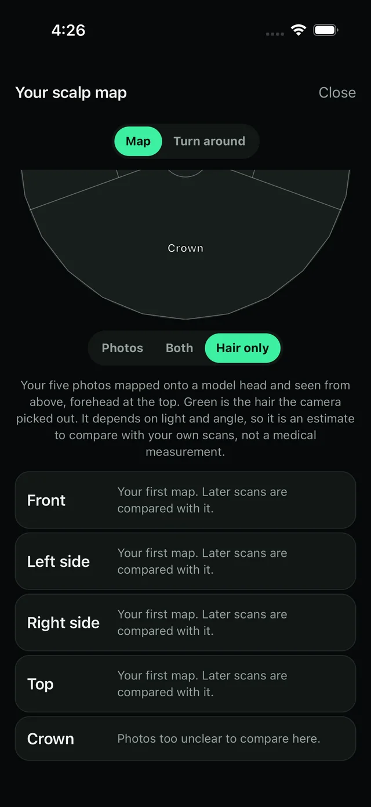
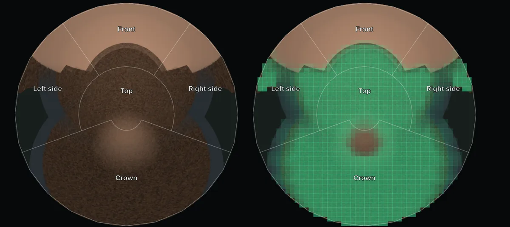
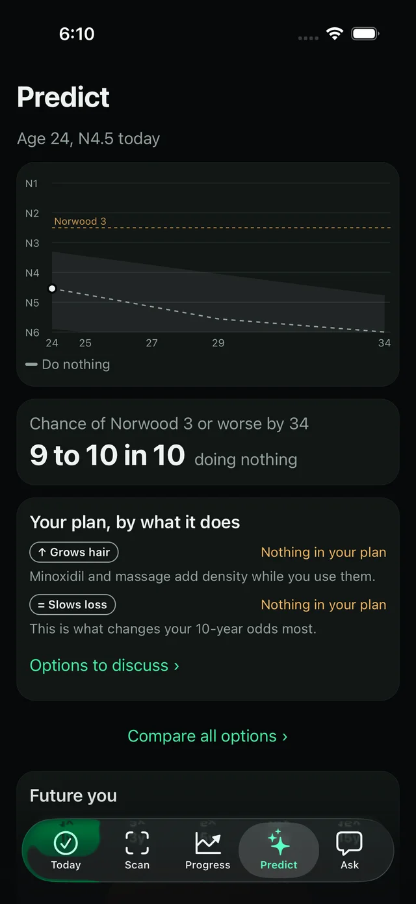
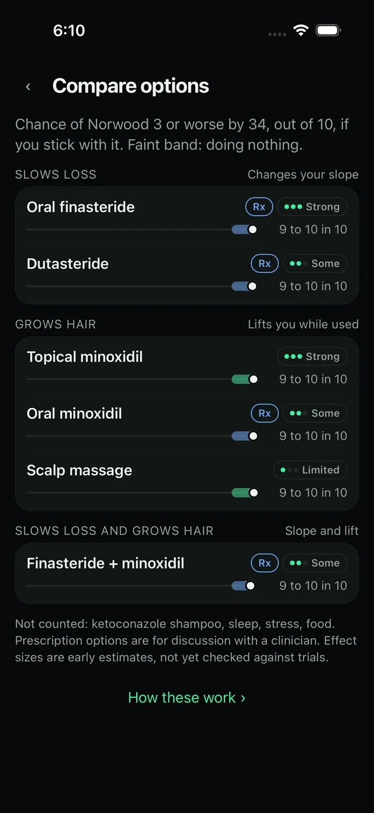

See it before
the mirror does.
Scan your hairline in 60 seconds. Fuller shows where it's heading, with and without a plan, how healthy your hair is, and which cuts it can pull off. Now and in five years.
One email on launch day. Nothing else.

Same scan. Every time.
Most hair apps give you a different number every time the lighting changes. Fuller's scan is guided by a laser line and checks every shot, so the number moves when your hair does.

Five photos. One map of your scalp.
Front, both temples, top and crown, stitched into a Scalp Map you can compare scan to scan. Green is hair the camera picked up. (Sample head, not a real scan.)
Five angles. The app tells you when to turn and when to hold still.
Your scan is measured on your phone. The photos stay there.
Me at 30. Two ways.
Your hairline over the next ten years, with a plan and without one. It's built from your scan, your age and your family's hair, and it's always shown as a range.
If nothing changes.
If you stick with it.
Month 6. The line didn't move.
On planEvery scan is checked against where untreated-you would be by now. That's the proof most people never get, and it's why they quit in month three.
Green: your hairline · Dashed: where it would be untreated


One scan. Three questions about your hair.
Other apps answer one of them. Fuller answers all three from the same scan, so the numbers agree with each other.
Am I losing it?
Your hairline, where it's heading, and what you're doing about it.
Scalp Map
Five zones, compared with your last scan.
Family Forecast
Add photos of your dad and grandads. Their hairlines feed your forecast, because genes do most of the work.
Your Plan and daily log
Meds, massage, sleep and shedding. Ten seconds a day.
Is it healthy?
The hair you have now, and what you put on it.
Hair quality reading
Density, thickness and scalp, read from the same scan.
Product scanner
Point your camera at a bottle. See if it suits your scalp.
Routine coach
Wash, care and habits, built around your hair and your week.
What can I pull off?
Cuts that work with your hair today, and the ones that still will later.
Try-On
Try-on apps paste a haircut on any head. Fuller only suggests cuts your density can carry, and tells you which ones still work in five years.
Transplant preview
Thinking about a transplant? See where a new hairline could sit on you before you book a consult.
Your head stays on your phone.
Photos of your scalp are personal. We built Fuller so we never need to see them.
Scans are measured on your phone
Photos and measurements live in the app's private storage. We don't have a copy.
Nothing to sign up for
No login, no profile on a server. Your answers and logs never go to ad or analytics tools.
AI previews only if you ask
The optional photo preview sends one photo, is never stored, and is off for under-18s.
Delete anything, any time
Delete a scan and its photos go with it. Delete the app and everything is gone.
Fair questions.
Is this a diagnosis?
No. Fuller gives estimates to help you track your hair, always as a range. It isn't a medical device. If you're worried, or want to start treatment, talk to a doctor or a licensed provider.
How accurate is the forecast?
It's an estimate, and we show it that way: a range, not one number. It gets sharper as you add scans and family history. A single scan is never treated as a trend.
Do my photos get uploaded?
Your scan photos don't. They're measured on your phone and stay there. The one exception is the optional AI preview, which you have to switch on yourself. It sends a single photo to make the image and nothing is kept.
Who is it for?
Anyone 13 or older who wants to keep an eye on their hair. Under-18s get the scan, Scalp Map and forecast, but never see prescription options or AI previews.
What does it cost?
Prices will be on the App Store and Google Play pages at launch. Subscriptions run through your store account, and you can cancel any time in your phone's settings.
When can I get it?
Soon. We're finishing testing on iPhone and Android. Join the waitlist and you'll get one email on launch day.
Join the waitlist. One email when Fuller is out, and that's it.